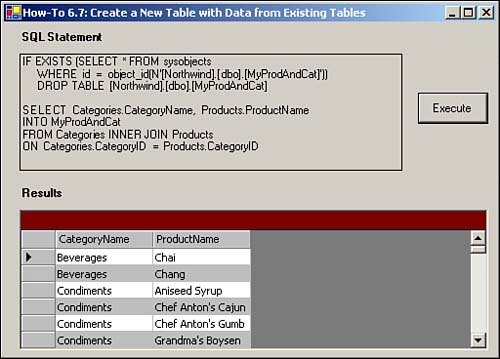

Tip
Now that you have learned this technique, you will want to use it repeatedly. Make sure you mark this page! |
I often need to create new tables from existing data. If the table already exists, I need to delete the old table first. How do I do this using T-SQL?
To perform these tasks, you will create two T-SQL statements and use them in one Command object. Here are the two statements that will be used:
IF EXISTS (SELECT * FROM sysobjects
WHERE id = object_id(N'[Northwind].[dbo].[MyProdAndCat]'))
DROP TABLE [Northwind].[dbo].[MyProdAndCat]
SELECT Categories.CategoryName, Products.ProductName INTO MyProdAndCat
FROM Categories INNER JOIN ProductsON Categories.CategoryID =
Products.CategoryID"
The first statement checks for the existence of the particular table you will be creating, in this case MyProdAndCat. This statement demonstrates a couple of techniques that you can use in T-SQL:
Using the EXIST statement with a SELECT statement, querying the system table called sysobjects
Using an IF statement to conditionally execute another command, in this case the DROP TABLE statement
Tip
Now that you have learned this technique, you will want to use it repeatedly. Make sure you mark this page! |
The last statement uses an inner join to join two tables displaying the CategoryName and ProductName. The clause that creates the new table is this:
INTO MyProdAndCat
This tells SQL Server to create a new table called MyProdAndCat from the SELECT statement that is specified.
Open and run the Visual Basic .NET-Chapter 6 solution. From the main form, click on the button with the caption How-To 6.7. You will see the SQL string specified in the "Technique" section displayed in a label. If you click the Execute button, the new table is generated a SELECT statement is executed, and the results are displayed in the DataGrid object (see Figure 6.8).
Create a Windows Form. Then place the controls listed in Table 6.7 with the following properties set, as displayed in Figure 6.8.
|
Object |
Property |
Setting |
|---|---|---|
|
Label |
Text |
SQL Statement |
|
Label |
Name |
lblSQLString |
|
Label |
Text |
Results |
|
Button |
Name |
btnExecute |
|
Text |
Execute |
|
|
DataGrid |
Name |
dgResults |
Add the code in Listing 6.16 to the Load event of the form. (Double-click on the form to bring up the code.)
Private Sub frmHowTo6_7_Load(ByVal sender As System.Object, _
ByVal e As System.EventArgs) Handles MyBase.Load
'-- Build the SQL String that returns cities that
' have more than one customer in them.
Dim strSQL As String
strSQL = "IF EXISTS (SELECT * from sysobjects " & vbCrLf
strSQL &= " WHERE id = object_id(N'[Northwind].[dbo].[MyProdAndCat]'))" & _
vbCrLf
strSQL &= " DROP Table [Northwind].[dbo].[MyProdAndCat]" & _
vbCrLf & vbCrLf
strSQL &= "SELECT Categories.CategoryName, Products.ProductName" & vbCrLf
strSQL &= "INTO MyProdAndCat" & vbCrLf
strSQL &= "FROM Categories INNER JOIN Products" & vbCrLf
strSQL &= "ON Categories.CategoryID = Products.CategoryID"
Me.lblSQLString.Text = strSQL
End Sub
Add the following code in Listing 6.17 to the Click event of btnExecute. This code creates Connection and Command objects by using the T-SQL routine discussed in the "Technique" section. Then the code executes the query. Next, a select query is run against the new table, and the DataSource property is set to the data table that was filled.
Private Sub btnExecute_Click(ByVal sender As System.Object,
ByVal e As System.EventArgs) Handles btnExecute.Click
Dim dtResults As New DataTable()
Try
Dim ocnn As New OleDb.OleDbConnection(BuildCnnStr("(local)", _
"Northwind"))
Dim ocmd As New OleDb.OleDbCommand(Me.lblSQLString.Text)
ocmd.Connection = ocnn
ocnn.Open()
ocmd.ExecuteNonQuery()
ocnn.Close()
'-- Use the SQL String to build the data adapter
' and fill the data table.
Dim odaResults As _
New OleDb.OleDbDataAdapter("Select * From MyProdAndCat",
BuildCnnStr("(local)", "Northwind"))
odaResults.Fill(dtResults)
Catch excp As Exception
MessageBox.Show(excp.Message)
Exit Sub
End Try
'-- Assign the data table to the data grid's DataSource property
Me.dgResults.DataSource = dtResults
End Sub

You will probably want to go ahead and drop the new table after you are finished using it if you don't need to keep it around for any other purposes.